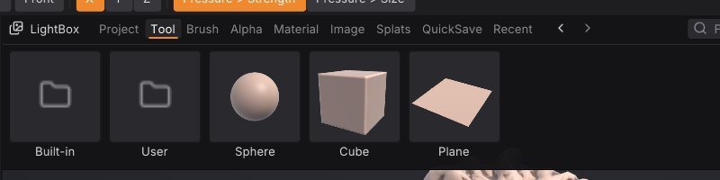

Projects, autosave and QuickSave
A SculptForge project (.sfproj) saves your whole scene in one file, so you can close the app and carry on exactly where you stopped. This chapter covers saving and opening projects, the unsaved-changes prompt, recent files, autosave and crash recovery, QuickSave, and the LightBox tabs that show your work.
What a project keeps#
A .sfproj file holds everything SculptForge knows about the scene:
- every SubTool, with its name, visibility, mesh, mask, polypaint, polygroups, hidden faces and UVs;
- every sculpt layer with its weight, and the active layer of each SubTool;
- each SubTool's QRemesh Guides, the curves QRemesh's edge loops follow;
- loaded Gaussian splats and their placement;
- your custom brushes, so a project opened on another computer still has them;
- the camera, the material and display settings, the brush, Draw Size, Z Intensity (and Smooth's), RGB Intensity, Focal Shift, paint colour and symmetry;
- a thumbnail, shown in the LightBox.
Undo history isn't saved: an opened project starts with a clean history.
Model formats such as OBJ, GLB or FBX can't hold all of this (masks, hidden faces, splats, brushes), so writing them is an export, not a save. See Exporting.
Save a project#
- File > Save (Ctrl+S) saves to the current project. The first time, it asks for a file name.
- File > Save As... (Ctrl+Shift+S) saves under a new name.
- Clicking the document name in the title strip also saves.
The title strip shows the document name with * after it while there are unsaved changes, and the window title starts with *. Any edit in any SubTool counts, as do splat edits and layer weight changes.
If you opened a model file (an OBJ, say) rather than a project, Save asks where to save a new .sfproj; the original model file is left alone.
Open a project or model#
- File > Open... (Ctrl+O) opens a project, a model or a splat capture. Opening a project or model replaces the scene.
- File > Open Recent lists the last 10 files you opened or saved. Files that no longer exist are dropped from the list. Clear Recent empties it.
- Drop a file onto the window to open it.
- In the LightBox, double-click a project or model.
File > New Sphere (Ctrl+N) and File > New Plane start a fresh scene.
When you open a project, its saved camera, material and brush settings come back too.
The unsaved-changes prompt#
When the scene has unsaved changes, New Sphere, New Plane, Open..., Open Recent, dropping a model or project, Quit (Ctrl+Q) and closing the window first ask:
- Save saves the project (asking for a name if it has none), then carries on;
- Don't Save discards the changes and carries on;
- Cancel goes back to your work.
Dropping an image or a .sfbrush file never asks, because it doesn't replace the scene.
Autosave and crash recovery#
While the scene has unsaved changes, SculptForge writes a recovery copy every few minutes (every 5 minutes by default; it waits until you finish a stroke). Change the interval, or turn it off with 0, in Preferences > Autosave or with the Autosave (min) slider in the File palette (0 to 60 minutes).
The recovery copy is autosave.sfproj in the SculptForge settings folder (see Troubleshooting for where that is on your system). It is deleted once your work is saved or you discard the changes.
If SculptForge didn't close normally (a crash or power cut), the next start asks Restore Autosave?:
- Restore opens the autosaved scene as an untitled, unsaved document. Save it to keep it.
- Discard deletes the recovery copy.
The autosave also appears first in the LightBox QuickSave tab while it exists.
QuickSave#
QuickSave in the title strip saves a timestamped copy of the whole scene, like ZBrush's QuickSave. Your project file, its name and its unsaved state are not changed, so QuickSave is safe to press before any risky step.
-
Copies go to the
QuickSavefolder of your library (by defaultDocuments/SculptForge/QuickSave), named likeQuickSave 2026-10-21 23-15-04.sfproj. - The last 10 QuickSaves are kept; older ones are deleted.
- They appear in the LightBox QuickSave tab, newest first, labelled with their date and time. Double-click one to open it. The tab also has a Save now button.
QuickSave has no default shortcut. To give it one, hold Ctrl+Alt, click the QuickSave button and press a key (see The interface).
Your library folder and the LightBox#
SculptForge keeps a library folder for your work, by default SculptForge in your Documents folder. It is created on first use with these sub-folders:
| Folder | LightBox tab | What goes there |
|---|---|---|
Projects | Project | Your .sfproj files |
Tools | Tool | Models to open or append as SubTools |
Brushes | Brush | .sfbrush files |
Alphas | Alpha | Grayscale images for brush alphas |
Images | Image | Sketches and concept art for Generate 3D |
Splats | Splats | Gaussian splat captures |
QuickSave | QuickSave | QuickSave copies |
Change it in Preferences > LightBox > Library folder, then Store Config (Ctrl+Shift+I) to keep the setting.
Press , (comma) to show the LightBox. The tabs that matter for projects:
-
Project: the projects in your
Projectsfolder, plus any recent project saved elsewhere. Each shows the thumbnail saved with it. - QuickSave: the autosave (when there is one) and your QuickSaves, newest first.
- Recent: everything in Open Recent, of every kind.
Double-click a tile to open it (you are asked about unsaved changes first). In the Tool tab, Shift+double-click a model to append it as a SubTool instead.


Scripting#
| Command | What it does |
|---|---|
save_project path=work/dragon.sfproj | Save the project (without path, to the current project) |
open_project path=work/dragon.sfproj | Open a project (open also recognises .sfproj) |
open path=scan.obj | Open a model, splat capture or project |
new_sphere subdivisions=6 / new_plane resolution=128 | Start a new scene |
Projects saved by sculptforge-cli or Python open in the app too. For the file layout, see docs/project-format.md.
See also#
- The interface: LightBox, shortcuts and Store Config
- SubTools
- Exporting: formats for other applications
- Troubleshooting: where settings and the autosave live